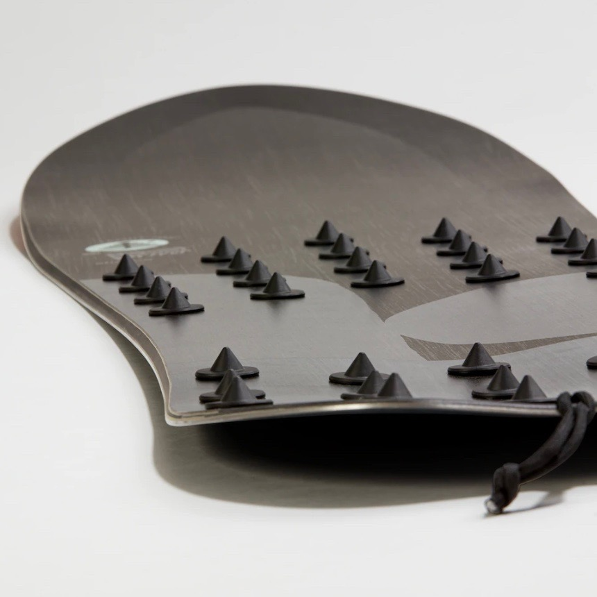
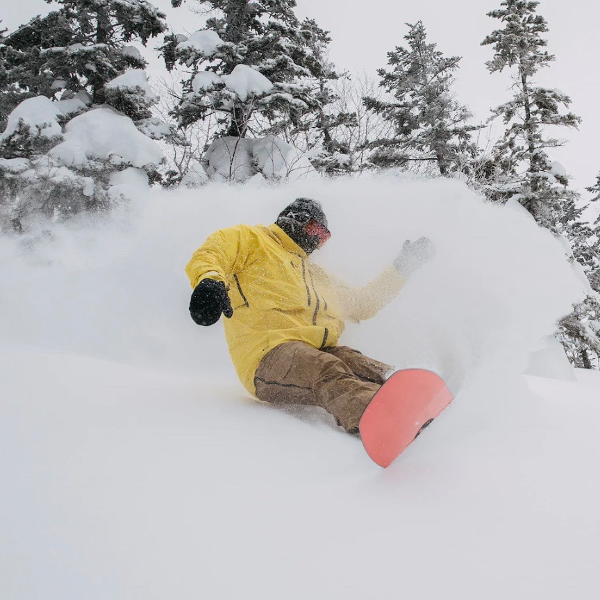

Good powder snowboards come in a few different shapes and usually run taller. Most powder specific boards have a wider nose that tapers into a narrower tail. Like a Freeride snowboard, the side cuts can range from mellow to sharp to sharp in, sharp out. This isn’t a board you would want to take out on everyday, resort groomers. Its intent to to allow you seek the deep and slay pow turns all day long in the backcountry or deep bowls.
 